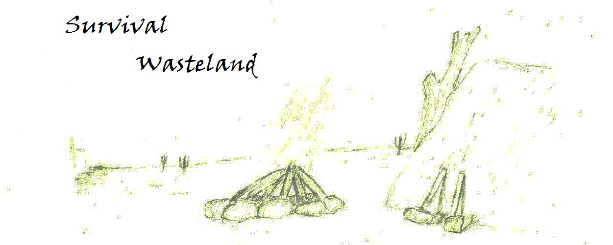

25/4/2013: Game was presented in Microsoft Imagine Cup 2014, praised mainly for the concept, the "engineer's approach", retro feeling and being a solo project.
A game of creativity and survival. The player is found in the middle of a wasteland, and only has what nature provides him with, will he make it out of there, or will the harsh conditions overcome him? In this game the player is given the ability to gather items, craft them into new ones, add elements to the environment, manage inventory and exchange with containers, and eventually builds a steam powered car manually puting the parts of his choice to escape the wasteland. While trying to escape, he also has to make sure he has shelter for the night, or harvest food to replenish the health he lost overnight.
Game has achieved rank 246 on IndieDB and 411 on ModDB with V0.4 release.


Top popularity reached: 138/17534 on IndieDB and 264/22143 on ModDB